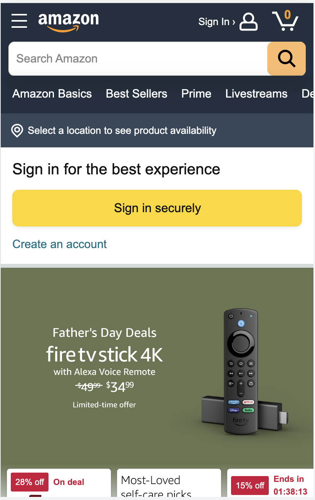
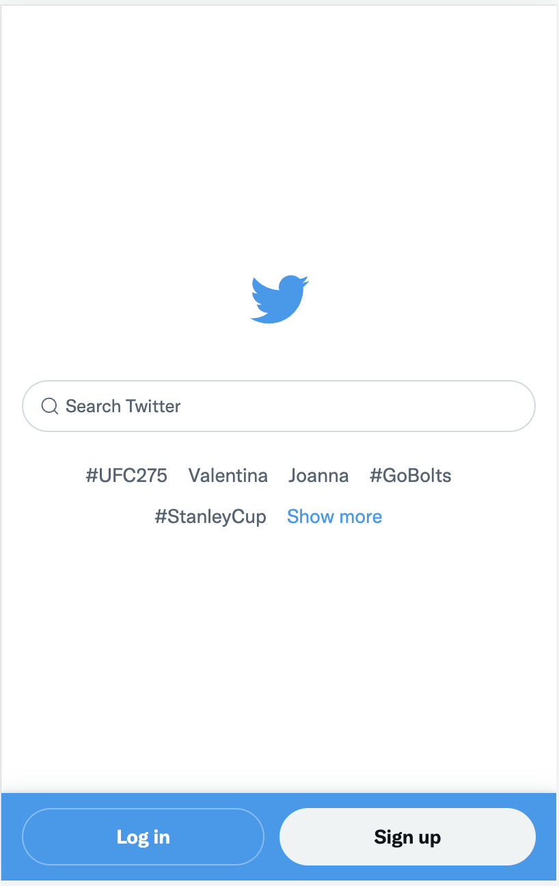

PARC: Contrast
GitHub - https://github.com
There is a stark contrast between the message, the description, and the background. This not only helps with legibility, but also showcasing the message presented by the website.
Visual Hierarchy
Amazon - https://amazon.com

Through showcasing the featured sales and providing smaller alternative options, this website shows what is most important, along with alternative selections.
White Space and Clean Design
Twitter - https://twitter.com

By presenting a simple login screen, there is no question that this website presents the option to either login or search for Twitter feeds. This is a vary simplistic approach.